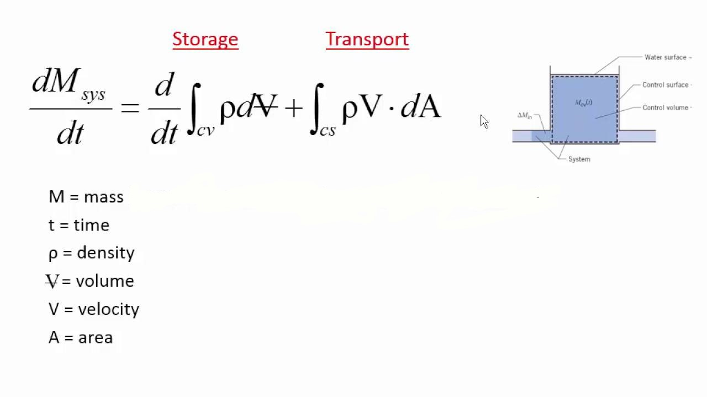
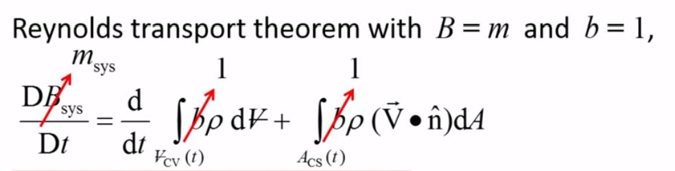
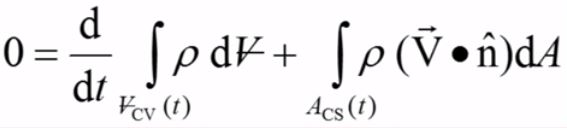
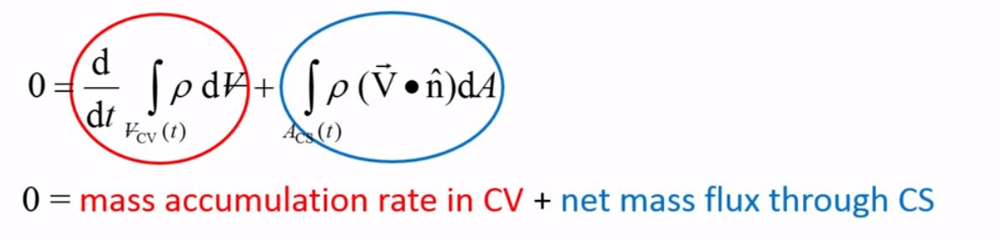
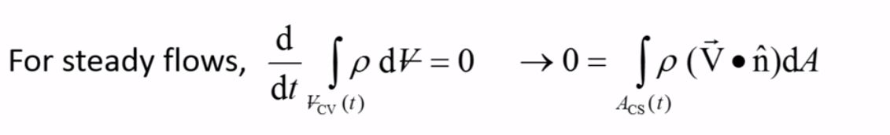

Mass Conservation
-
Reynold's Transport Theorem:

- We use Reynold's transport theorem with the extensive property as mass.
- Since mass is conserved for the system, LHS becoms zero
- 
- So the equation becomes

- The first term on the RHS of the above equation represents
the rate of accumulation of mass in the control volume, and the
second term represents the rate of mass flux through the control surface.
- 
- Most devices like pumps, pipes, turbines, etc are non-deformable and the flow is steady and incompressible.
So the mass accumulation term becomes zero. The equation simplifies to:
- 
- This simplified equation can be applied in most cases.